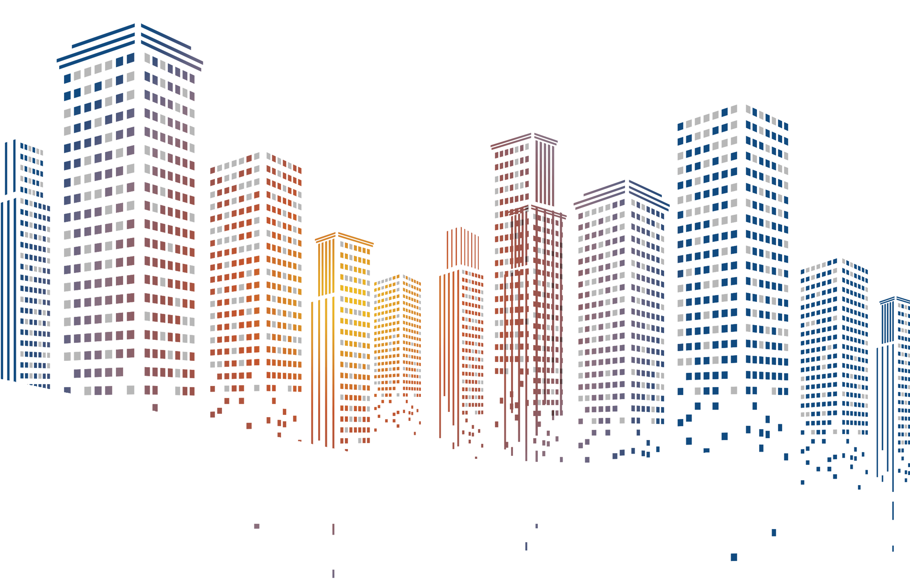

Fragíles Evento Internacional
2 días intensivos de transformación personal con ¡grandes invitados internacionales!.
Descubrirás un programa desarrollado en 7 pasos para poder sacar lo mejor de cada crisis o cambio, en un formato totalmente inclusivo.
¿Sientes que estás en un momento de tu vida decisivo para comenzar a hacer cambios?
¿Piensas que siempre podemos salir fortalecidos de cualquier reto que se nos presenta en la vida?
¿A veces no consigues las herramientas necesarias para seguir adelante?
¿Hoy más que nunca necesitas inspiración y diseñar tu propia hoja de ruta para tener la vida que realmente quieres?
-
En Frágiles Evento Internacional sabemos que este tipo de cambios vitales y de afrontamiento de la crisis no son para nada fáciles. Debemos ser realistas, pero hasta que uno no pasa por una experiencia traumática, sea física o psicológica, creemos que eso de la vulnerabilidad y la fragilidad humana no va con nosotros. Los pensamientos triunfalistas y de invulnerabilidad, producen una gran frustración en el ser humano, al querer siempre estar feliz y no experimentar momentos de angustia, tristeza, abatimiento o impotencia.
Te invitamos a participar en Frágiles, donde podrás descubrir de la mano de grandes profesionales, todo el poder que hay detrás de cada crisis o cambio. Con más de 15 conferencias e historias inspiradoras contadas por sus protagonistas. Bajo la dirección de José Antonio Molina Mora aprenderás diferentes estrategias para acercarte un poco más a la vida que realmente quieres a nivel personal y profesional.
Hemos diseñado todo un itinerario de entrenamiento de 2 días donde te redescubrirás y saldrás como una persona renovada que sabe aceptar su fragilidad, la utiliza para ser más fuerte y con un gran poder interior para afrontar los cambios.
-

¿CÓMO VIVIRÁS FRÁGILES EVENTO INTERNACIONAL?
5
Historias inspiradoras y de resilencia contadas por sus protagonistas.
2
Días de aprendizaje intensivo.
15 Especialistas en Desarrollo Humano
Podrás participar en directo e interactuar con nosotros desde un ordenador o desde tu Smarthphone.
España y más de 10 países de habla hispana conectados en directo.


Nuestro Director y conductor
José Antonio Molina Mora: Fundador de Frágiles Evento Internacional. Investigador y divulgador científico. Director de la Universidad de la Felicidad en Valladolid y CEO del Instituto Español de la Felicidad e Investigación. Con una gran trayectoria en el mundo del desarrollo humano y que desde su propia experiencia ha podido diseñar este programa.
José Antonio Molina Mora, ha estado trabajando durante más de un año con un gran equipo de Psicólogos, Sociólogos, Expertos en Desarrollo humano, Actores, Actrices, Empresarios y Formadores, para llevar a cabo este magno evento.

Te invitamos a conocer a las personas que darán vida al mayor evento de desarrollo humano del 2021
Totalmente gratuito e inclusivo
DIRECCIÓN Y COORDINACIÓN
CEO Y MODERADOR

DIRECTORA DE SALA Y FORMACIÓN

DIRECTOR DE LOGÍSTICA Y COORDINACIÓN
PONENTES E INVITADOS INTERNACIONALES


Programa
(Hora local de Madrid-España)
10:00 Apertura del Evento con José Antonio Molina Mora CEO de
Frágiles Evento Internacional. Taller Despertar en medio del Caos.
11:00 Roxana Díaz. Actriz y Empresaria. (Historia de superación y
crecimiento personal)
11:30 Scarlet Ortíz. Actriz y Empresaria. (Historia de superación y
crecimiento personal)
12:00 Dra. Teresa Gallego. Doctora en Psicología y Profesora
Universitaria. Conferencia. Más allá del pensamiento positivo.
13:00 Maribel Zerpa Asesora, Coach, Docente y Conferencista.
Conferencia. Emigrar ¡Reinventarnos no tiene edad!
13:30 Kena García. Coach Humanista y Escritora. Conferencia. ¡Habla
fuerte y claro!
14:00 a 15:30 Descanso.
15:30 Estrella Martín y José Sedek. Actores y Expertos en Desarrollo
Humano. CEOS IS THE JUMP. Taller Parejas que disfrutan en una misma
Vibración.
16:10 Miguel de Lucas. Presentador de Televisión La 2 TVE y CyLTv.
Conferencista y Empresario. Conferencia. Hay un Mago en Ti.
17:00 Gustavo Henao. Conferencista Internacional, Escritor y
Empresario. Conferencia Cicatrices de un Propósito.
18:00 Bárbara Palacios. Conferencista Internacional, Escritora
Inspiracional y Miss Universo 1986. Conferencia ¡Atrévete a vencer
tu fragilidad!
19:00 José Antonio Molina Mora. Taller Caminar hacia la salida más
próxima y prepararnos para el futuro. Cierre día 1.
10:00 Eusebio Vargas. Humorista y Presentador. Conferencia/Monólogo.
¡Humor, Risas y Lágrimas! Mas allá de nuestra Frágilidad.
10:20 José Antonio Molina Mora. Taller Cruzar la frontera del miedo
prepararnos para la acción.
11:00 Amanda Gutiérrez. Primera actriz, Animadora, Locutora y
Diplomada en Psicología Positiva. (Historia de superación y
crecimiento personal)
11:30 Hilda Abrahamz. Primera actriz, locutora, presentadora, es una
de las figuras más célebres del mundo de las telenovelas. (Historia
de superación y crecimiento Personal)
12:00 Josepe García. Director del Instituto Impact, Conferencista
Internacional, Escritor y Empresario. Conferencia convertir la
incertidumbre en un auténtico regalo para el emprendedor.
13:00 Montse López. Escritora, Conferenciante y Directora Comercial
de una gran transnacional. Directora de CpB. Conferencia ¡Sé tú
mismo, Sé Valiente!
13:30 Karem Feris. Conferencista, Empresaria y TV Host. Conferencia.
¡Todos podemos comenzar de nuevo!
14:00 a 15:30 Descanso
15:30 Gaby Spanic. Actriz, Presentadora, Cantante y Escritora.
(Historia de superación y crecimiento Personal)
16:00 Herika Miguez. Coach, Conferencista y Formadora. Directora de
la Universidad de la Felicidad de Vigo y Empresaria. Conferencia.
Soy Madre, ¿Y ahora qué?
17:00 Iolanda Triviño. Especialista en transformación del talento,
Estratega, Conferencista. Conferencia. Despierta tu talento y no
dejes que el futuro decida por ti.
18:00 Montse Hidalgo. Empresaria, Coach y Conferencista
Internacional. Conferencia. El poder de ser tú mismo.
19:00 José Antonio Molina Mora. Taller Nuevos hábitos y compromiso
para el cambio. Cierre del Evento con muchas sorpresas.
Para celebrar estos dos días que hemos estados comprometidos con la transformación personal, tenemos preparadas grandes sorpresas.
Este evento es totalmente gratuito, si deseas hacer algún aporte
puedes hacerlo una vez inscrito al evento donando la cantidad que
desees al Banco de Alimentos de la "FUNDACIÓN JOSÉ
ANTONIO MOLINA MORA" que hoy por hoy ayuda a má de 50 familias
en Venezuela y con su aporte podremos ayudar a más personas en la
campaña ¡JUNTOS SOMOS MÁS! Es un aporte totalmente voluntario.
¿Por qué deberías vivir esta experiencia?
José Antonio Molina Mora ha diseñado este programa en 7 grandes pasos para que puedas aprovechar cada reto que se te presente y que puedas avanzar con mayor fortaleza interior.
Paso 1 - Aprender a despertar en medio del caos.
Paso 2 - . Caminar hacia la salida más próxima.
Paso 3 - . Diseñar un proyecto a futuro a corto plazo.
Paso 4 - . Cruzar la frontera del miedo.
Paso 5 - . Asumir la responsabilidad que tenemos para comenzar a tomar acción.
Paso 6 - . Proponernos nuevos hábitos.
Paso 7 - . Comprometerse con el cambio.
Preguntas Frecuentes
Es un evento en modalidad híbrida donde José Antonio Molina Mora estará acompañado de ponentes en directo desde nuestro plató vía zoom y con algunos asistentes en un grupo muy limitado. Usted podrá disfrutarlo cómodamente desde tu casa
Una vez que te inscribas recibirás un mail de confirmación de registro (recuerda revisar la bandeja de spam). En ese mail podrás encontrar las instrucciones. Una semana antes del evento recibirás un recordatorio con algunos materiales que necesitas descargar para las actividades que se realizarán. Podrá acceder con el mismo enlace los dos días de formación
Este evento es totalmente gratuito durante los días 6 y 7 de febrero. No se podrá acceder a la formación luego de esas fechas, queremos que aproveches esos dos días para su crecimiento
A partir del día 8 de febrero se activará el acceso ilimitado del contenido bajo la modalidad de pago de 9,90 euros o dólares.
Frágiles se ha diseñado para que sea un evento de transformación profunda e intensiva. Disfrutarás de momentos de entretenimiento y descansos para que puedas comer y relajarte un poco. Sin embargo, debes tener en cuenta que serán dos días intensos porque queremos que aproveches cada segundo para tu transformación y crecimiento. Así que te recomendamos que reserves ambos días
¡Te esperamos!
Calle Madre de Dios 5 local 1 Valladolid-España
Correo electrónico de contacto
info@fragilesevento.com
Télefono de contacto vía whatsapp +34 653112908
Patrocinadores oficiales
Organiza y Realiza -
Frágiles Evento Internacional
PARTNER
Universidad de la Felicidad
Innova2 Digital, C.A